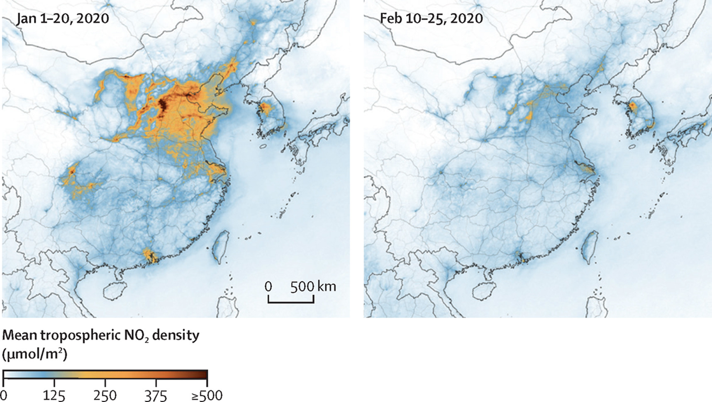
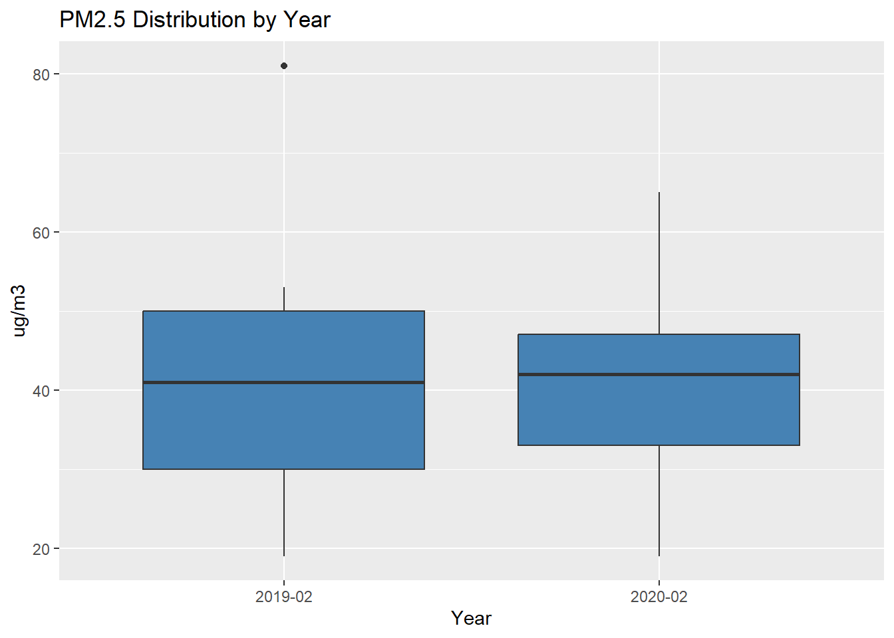
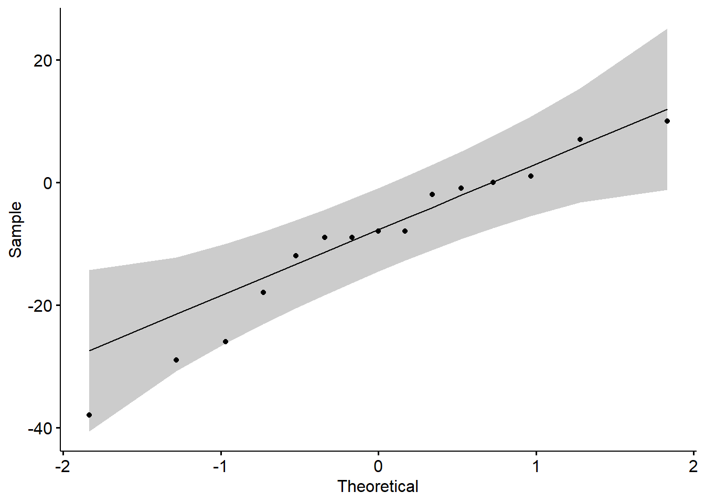
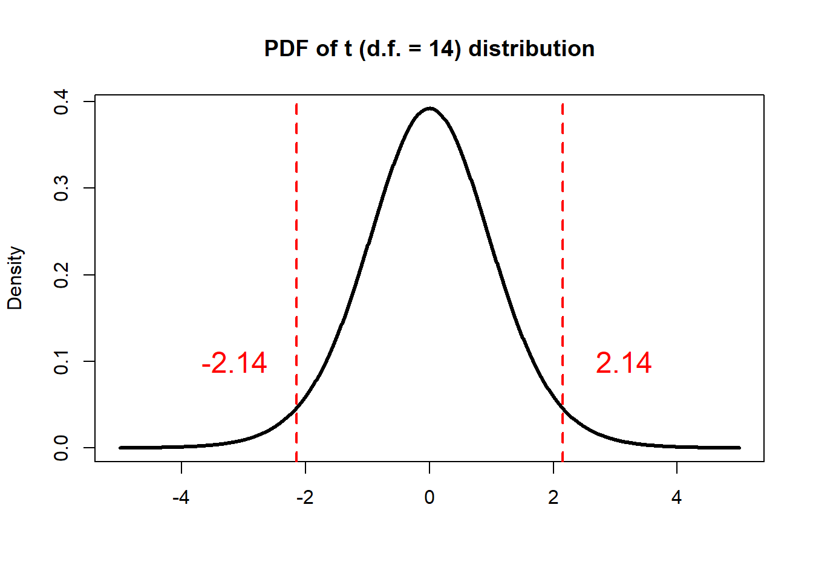

The COVID-19 pandemic outbreak has reshaped normal social and
economic activities dramatically, resulting in sudden changes in the
emissions of air pollutants and their precursors. To investigate the
impact of lockdown on air quality, we compare monthly PM2.5 (ug
m-3) in February of 2019 and 2020 in the following
15 cities.
| City | 2019 | 2020 | 2020-2019 |
|---|---|---|---|
| Beijing | 53 | 63 | -10 |
| Shanghai | 41 | 33 | -8 |
| Guangzhou | 26 | 24 | -2 |
| Shenzhen | 19 | 19 | 0 |
| Kunming | 26 | 33 | +7 |
| Chongqing | 48 | 49 | +1 |
| Wuhan | 64 | 38 | -26 |
| Hangzhou | 46 | 28 | -18 |
| Lanzhou | 42 | 41 | -1 |
| Hefei | 65 | 36 | -29 |
| Changsha | 53 | 41 | -12 |
| Changchun | 81 | 43 | -38 |
| Dalian | 51 | 43 | -8 |
| Fuzhou | 32 | 23 | -9 |
| Nanning | 44 | 35 | -9 |
| Mean | 46.1 | 36.6 | -9.5 |
It seems the mean PM2.5 level is lower in 2020. Can such a difference be explained on the basis of chance variation?
Can we use the independent two-sample t-test from the last Section to test the significance of such difference? Why or why not?
A paired sample t-test, also called the dependent sample t-test, is used to compare two population means in the case of two samples that are correlated. Two measurements are paired when they come from the same observational unit. The pairing has nothing to do with the actual data values but, rather, with the way the data values are obtained. Examples of where this might occur are:
Before-and-after observations on the same subjects (e.g. pollutant levels before and after a particular treatment).
A comparison of two different methods of measurement or two different treatments where the measurements/treatments are applied to the same subjects (e.g. pollutant measurements using a remote sensing method and a in situ technology).
The paired-sample t-test is the same as the one-sample t-test as the difference (\(D\)) between the two populations (\(X_1\) and \(X_2\)) is tested against zero.
Recall the definition of t-Ratio:
\[t=\frac {Estimate - Parameter} {SE(Estimate)} \] Here the standard error (SE) refers to the sample. If \(s\) is the sample SD of the difference, the SE for the estimate (\(\overline {D}\)) is:
\[SE(\overline {D})=\frac {s} {\sqrt{n}}\] For a paired sample t-test:
\[ t =\frac { \overline{D} - \mu_D } { {s} / \sqrt{n} } \] And \(t\) statistic follows a Student’s t distribution on \(n - 1\) degrees of freedom.
For our research question,
H0: Mean PM2.5 in the Feb. of 2020 is the same as that in 2019 in the given cities (\(\mu_D = 0\))
H1: Mean PM2.5 in the Feb. of 2020 is not the same as that in 2019 in the given cities (\(\mu_D \ne 0\))
In this case, \(\overline D\) is
-9.47, \(SE(\overline{D})\) is 3.47,
assuming H0 is true (\(\mu_D = 0\)), we
have \(t\)=-2.73.
Then the p-value can be calculated manually:
# PM2.5 in 2019 Feb.
PM2.5_2019 <- c(53, 41, 26, 19, 26, 48, 64, 46, 42, 65, 53, 81, 51, 32, 44)
# PM2.5 in 2020 Feb.
PM2.5_2020 <- c(63, 33, 24, 19, 33, 49, 38, 28, 41, 36, 41, 43, 43, 23, 35)
# Make data frame
PM2.5_data <- data.frame(PM2.5 = c(PM2.5_2019, PM2.5_2020),
Year = c(rep("2019-02",n),rep("2020-02",n)))
# Compare boxplots
PM2.5_data %>%
ggplot(aes(x=as.character(Year), y=PM2.5)) +
geom_boxplot(fill="steelblue") +
labs(title="PM2.5 Distribution by Year", x="Year", y="ug/m3")
# Sample difference
Diff <- PM2.5_2020 - PM2.5_2019
# Get sample size, degrees of freedom, and sd
n <- length(Diff)
df <- n - 1
sd <- sd(Diff)
# Check normality, qqplot
ggqqplot(Diff)
##
## Shapiro-Wilk normality test
##
## data: Diff
## W = 0.94471, p-value = 0.4453# SE of the difference
SE <- sd/sqrt(n)
# Get t-ratio
t <- mean(Diff)/SE
# Find the two-sided p-value
# The pt function gives the Cumulative Distribution Function (CDF)
# of the Student's t distribution in R, which is the probability that
# the variable takes a value lower or equal to a threshold (here |t|).
P_value <- (1-pt(abs(t), df=df))*2
print(P_value)## [1] 0.01635031Now, we have a probability of about 1.6% getting a
statistic (\(t\)) as extreme or more
extreme than the observed statistic (-2.73), assuming H0 is
true. This is a small probability, and is not likely due to chance. We,
therefore, reject H0 given the observations. Thus, mean PM2.5 in the
Feb. of 2020 is statistically significant different
from that in 2019 in the given cities. The observations
suggest that the massive lockdown in China during 2020
Feb. may lead to a lower PM2.5 level, compared with the same period in
2019.
In R, you can simply conduct the previous paired sample t-test as:
H0: Mean PM2.5 in the Feb. of 2020 is the same as that in 2019 in the given cities (\(\mu_D = 0\))
H1: Mean PM2.5 in the Feb. of 2020 is not the same as that in 2019 in the given cities (\(\mu_D \ne 0\))
In R, this is done by:
# PM2.5 in 2019 Feb.
PM2.5_2019 <- c(53, 41, 26, 19, 26, 48, 64, 46, 42, 65, 53, 81, 51, 32, 44)
# PM2.5 in 2020 Feb.
PM2.5_2020 <- c(63, 33, 24, 19, 33, 49, 38, 28, 41, 36, 41, 43, 43, 23, 35)
# Call t.test function
# Here we compare the sample average with a known mean (0)
# Since H1 states a different PM2.5 level in 2020,
# we use two-sided p-value
# Pay attention the order of two samples
t.test(PM2.5_2020, PM2.5_2019, alternative="two.sided", paired=T)##
## Paired t-test
##
## data: PM2.5_2020 and PM2.5_2019
## t = -2.7275, df = 14, p-value = 0.01635
## alternative hypothesis: true mean difference is not equal to 0
## 95 percent confidence interval:
## -16.910760 -2.022573
## sample estimates:
## mean difference
## -9.466667Here we set paired=T when call the t.test()
function. By doing so, R knows we would like to do a paired sample
t-test.
As you may notice, another thing comes out from the proceeding t-test
is a range (-16.9 to -2.0), called 95
percent confidence interval. A confidence interval (CI) refers to
the probability that a population parameter will fall between a
set of values for a certain proportion of times.
Confidence intervals measure the degree of uncertainty or certainty
in a sampling method. They can take any number of probability limits,
with the most common being a 95% or 99%
confidence level. From the proceeding t-test, the
95% CI can be stated as: 95% of times \(\mu_D\) will fall within the range between
-16.9 and -2.0.
Let’s use the definition of \(t\) ratio to understand the confidence intervals.
\[ t =\frac { \overline{D} - \mu_D } {
{s} / \sqrt{n} } \sim t_{df=n-1} \] For a given t distribution on
the degrees of freedom of n-1, 95% of values in this
distribution will fall between two endpoints that make the corresponding
probability of 95%. In this case (d.f.=14),
it’s -2.14 and 2.14:
# Make a vector from -5 to 5, with a step of 0.01
x <- seq(-5.0, 5.0, by=0.01)
# Compute the density for each element in x
# Set the degrees of freedom to be 14
density <- dt(x, df=14)
# Plot Density
plot(x, density, col="black", xlab="", ylab="Density",
type="l", lwd=3, cex=2,
xlim=c(-5.0, 5.0),
main="PDF of t (d.f. = 14) distribution")
# Get the 2.5th percentile
p_2.5th <- qt(0.025,df=14)
# Get the 97.5th percentile
p_97.5th <- qt(0.975,df=14)
# Add vertical lines
abline(v=p_2.5th, col="red", lwd=2, lty=2)
text(p_2.5th-1, 0.1, as.character(round(p_2.5th,2)), col="red", cex=1.5)
abline(v=p_97.5th, col="red", lwd=2, lty=2)
text(p_97.5th+1, 0.1, as.character(round(p_97.5th,2)), col="red", cex=1.5)
That is, if we randomly draw 10000 samples (\(X_1 -X_2\)), 9500 of those
samples would have a \(t\) ratio that
falls between -2.14 and 2.14 in theory, and
500 of those samples would fall outside the interval. For
the 9500 samples that with \(t\) ratio between -2.14 and
2.14, so we have:
\[ -2.14 \le \frac { \overline{D} - \mu_D
} { {s} / \sqrt{n} } \le 2.14 \] which is equivalent to say
that, 9500 of the 10000 times the unknown
population mean (\(\mu_D\)) would be
within the following interval:
\[ \overline{D} - 2.14 * \frac {s} {\sqrt{n}} \le \mu_D \le \overline{D} + 2.14 * \frac {s} {\sqrt{n}} \] and we have:
\[ -16.9 \le \mu_D \le -2.0 \]
This is exactly the same as the R output. Now, we understand that this
range represents that 95% of the time the unknown
population mean (\(\mu_D\)) would fall
within the range between -16.9 and -2.0. As
such, mean PM2.5 level in 2020 Feb. is lower than that in 2019 by
16.9 to 2.0 ug m-3 (95% CI). Or
another way to put it, PM2.5 level in 2020 Feb. on average is lower than
that in 2019 by 16.9 to 2.0 ug m-3
(95% CI).
A general way to write the CI (100(1-x)% confidence
level) of unknown population mean (\(\mu_D\)) would be:
\[ \overline{D} - t_{df=n-1}(1-0.5x) \frac
{s} {\sqrt{n}} \le \mu_D \le \overline{D} + t_{df=n-1}(1-0.5x) \frac {s}
{\sqrt{n}} \] where \(t_{df=n-1}(1-0.5x)\) is the
100(1-0.5x)th percentile of the t distribution on \(n-1\) degrees of freedom.
In fact, we have seen CI as default R output from the one-sample t-test and independent two-sample t-test. You should be able to explain the meaning of each CI. Please try.
To reduce traffic noise, city X brings in a new regulation of not
using horns within a certain area. A research group measures noise
levels (L90) from 8 representative locations
within this area, before and after the regulation (unit: dB).
Before the regulation:
51, 48, 52, 62, 64, 51, 55, 60
After the regulation:
46, 45, 53, 48, 57, 55, 42, 50
Based on the observations, is the regulation effective in reducing the noise of this area?
1.1 Which test will you use?
1.2 What is the H0 and H1?
1.3 Do you use one-sided or two-sided p-value?
1.4 Is the regulation effective in reducing the noise of this area?
Here use a significant level of 0.05.
1.5 If the regulation is effective in reducing the noise of this
area, then by how much? Report your results using a confidence
level of 95%.
Suppose we want to test the reliability of a remote sensing method in
measuring CO2. For a given location, the in situ measurements
(ppm) for 10 days read as:
415, 385, 378, 398, 413, 359, 391, 410, 390, 402Meanwhile, the corresponding remote sensing results are:
412, 361, 401, 432, 413, 385, 378, 412, 420, 4002.1 Is this remote sensing method reliable in measuring CO2?
2.2 Report the CI for the difference. Does the 95% CI contain
0? What does that mean in term of determining a significant
difference between the two population means?
Recall the Exercise
#2 from Section 07, compute the 90%, 95%,
and 99% CI for the difference between mean COD from the two
rivers. Can you explain why CI is wider for a higher confidence
level?